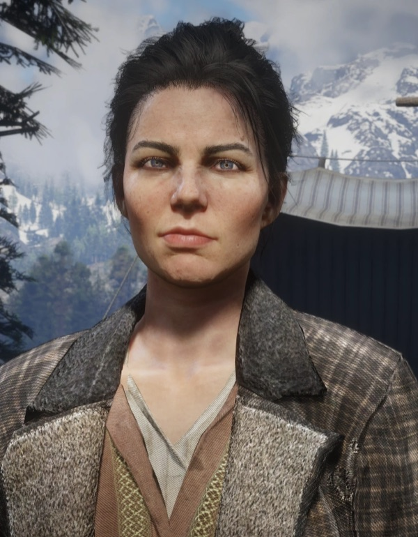
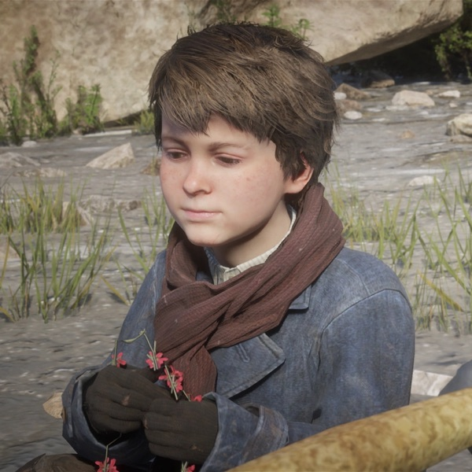
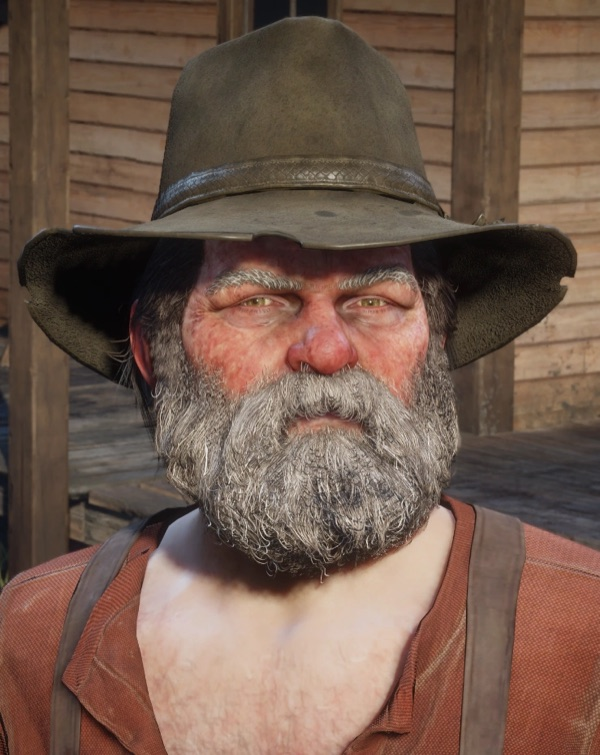
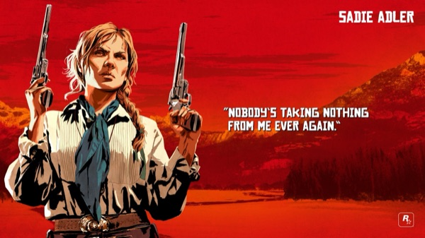
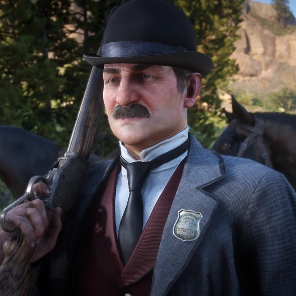
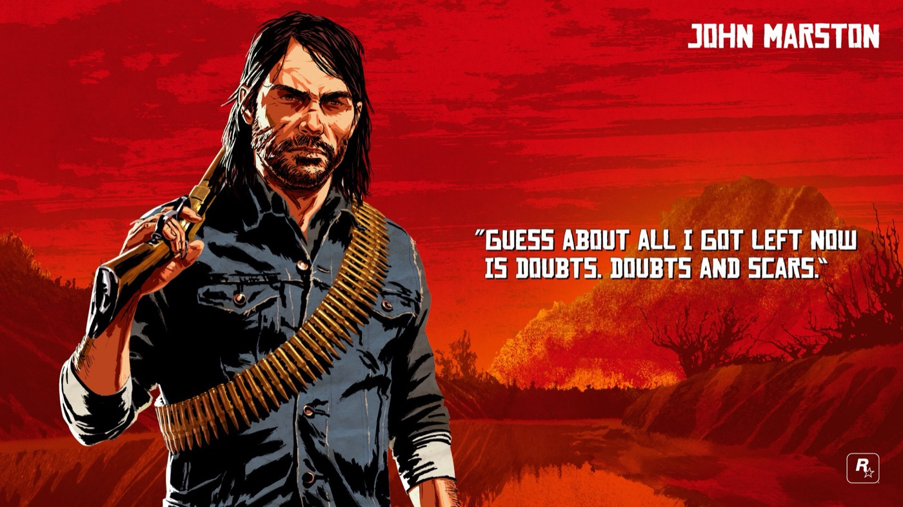
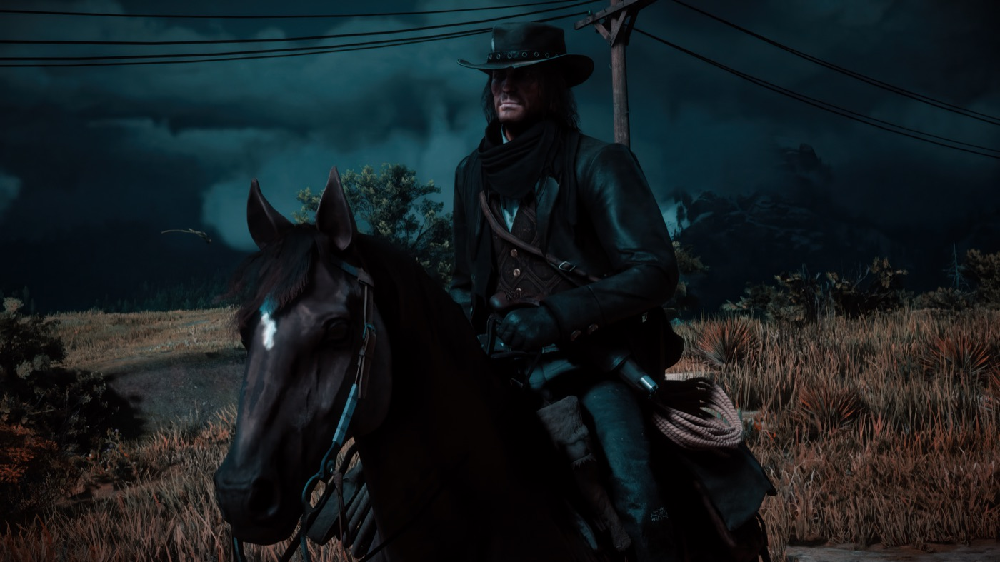

Character · Van der Linde gang
John Marston
John Marston is the protagonist of Red Dead Redemption (2010) and of its expansion Undead Nightmare, a major character of Red Dead Redemption 2 (2018), and the playable character of that game's epilogue. A member of Dutch van der Linde's gang from the age of twelve, he is forced in 1911 to hunt down his former companions.
He is played by Rob Wiethoff in both games.
- Born
- 1873
- Died
- 1911, Beecher's Hope
- Status
- Deceased
- Nationality
- American
- Affiliation
- Van der Linde gang (1885-1899)
- Family
- Abigail Marston (wife), Jack Marston (son)
- Alias
- Jim Milton (1907)
- Games
- Red Dead Redemption, Undead Nightmare, Red Dead Redemption 2
- Voiced by
- Rob Wiethoff
Biography
Origins
John was born in 1873, the year carved on his grave. In Red Dead Redemption, he tells Bonnie MacFarlane that his mother, a prostitute, died giving birth to him, and that his father, "an illiterate Scot, born on the boat into New York", was blinded in a bar fight and died when John was eight. Sent to an orphanage, he ran away.
According to the official guide, he was about to be hanged for theft at twelve when Dutch saved him. Dutch raised him in his gang alongside Arthur Morgan and taught him to read. Abigail Roberts later joined the gang, and their son Jack was born. In Red Dead Redemption, John also mentions a daughter who died.
Red Dead Redemption 2 (1899)
Chapter 1: Colter
After the failed ferry robbery in Blackwater, the gang flees into the snow. John, sent ahead to scout, goes missing for two days. In "Enter, Pursued by a Memory", Arthur and Javier find his dead horse, then John himself on a ledge, wounded and surrounded by wolves, which have scarred his face. Bedridden, he stays out of the train robbery against Leviticus Cornwall, and leaves Colter on a stretcher in a wagon.
Chapter 2: Horseshoe Overlook
John raids an O'Driscoll safehouse with Arthur, Bill and Kieran Duffy, and with Bill persuades Arthur to keep Kieran with the gang. The plan to stop a train by parking a stolen oil wagon across the tracks is his; he then robs the Scarlett Meadows train with Arthur, Charles and Sean. In "The Sheep and the Goats", he plans the theft of sheep from Emerald Ranch and talks the Valentine auctioneer's cut down from 25 to 18 percent, before Cornwall's men take him and Strauss hostage.
Chapter 3: Clemens Point
In "Horse Flesh for Dinner", John, Arthur and Javier steal the Braithwaites' horses for Tavish Gray; the animals fetch 700 dollars instead of the 5,000 promised. After Jack's kidnapping, he takes part in the attack on Braithwaite Manor. In "The Battle of Shady Belle", he clears Lemoyne Raiders out of the plantation with Arthur, and admits on the way that he has been a bad father.
Chapter 4: Saint Denis
John goes with Dutch and Arthur to Angelo Bronte's mansion, and Jack is returned to his parents. He later knocks Bronte out before Dutch kills him. During the robbery of the Saint Denis bank, John is arrested by the Pinkertons and sent to Sisika Penitentiary. He spends chapter 5 in prison while the others are shipwrecked on Guarma.
Chapter 6: Beaver Hollow
In "Visiting Hours", Arthur and Sadie get John out of Sisika by trading him for a captured guard, to Dutch's displeasure. With Arthur, he blows up the Bacchus Bridge; Arthur urges him to take his family and leave. During the army payroll robbery, in "Our Best Selves", John is shot and falls from the train, and Dutch says he did not make it.
In the final mission, "Red Dead Redemption", John returns to Beaver Hollow ("You left me... you left me to die!") and sides with Arthur and Susan Grimshaw against Micah. The Pinkertons attack and the two men flee. Whatever Arthur's last choice, he gives John his hat and satchel and stays behind; John rejoins Abigail and Jack.
Red Dead Redemption 2: the epilogue (1907)
Epilogue I: Pronghorn Ranch
In 1907, the player controls John, who works at Pronghorn Ranch under the name Jim Milton. He recovers a stolen wagon from the Laramie Gang, then the ranch's cattle at Hanging Dog Ranch, where he kills the gang's leader. In Strawberry, he gives his real name at the post office. On the way back, three riders, one of them the brother of a man John killed earlier in Roanoke Ridge, attack him in front of Jack, and John kills them. Abigail leaves with Jack. John borrows money from a banker to buy land at Beecher's Hope, and Uncle joins him.
Epilogue II: Beecher's Hope
John finds Charles in Saint Denis, takes on bounties with Sadie, and builds a house at Beecher's Hope with Charles and Uncle. Abigail and Jack return. While capturing a bounty, he is mauled by a grizzly, and tells Sadie he wants to marry Abigail; he proposes to her in a rowboat.
In "American Venom", John, Sadie and Charles track Micah to Mount Hagen, where Dutch is with him. Dutch shoots Micah in the chest and John finishes him. John takes the gang's money, pays off his debts and marries Abigail. The game ends with Edgar Ross and Archer Fordham watching the ranch.
Red Dead Redemption (1911-1914)
Act I: New Austin
In 1911, the Bureau of Investigation holds Abigail and Jack. Agents Edgar Ross and Archer Fordham put John on a train in Blackwater, sending him to New Austin to hunt down Bill Williamson. At Fort Mercer, Bill refuses to surrender and one of his men shoots John, who is left for dead. Bonnie MacFarlane takes him in, and he works on her ranch. He recruits Marshal Leigh Johnson, Nigel West Dickens, Seth Briars and Irish, then storms Fort Mercer from Dickens's wagon with a Gatling gun. Bill has already fled to Mexico.
Act II: Nuevo Paraíso
In Mexico, John works both for the government side, Colonel Allende and Captain de Santa, and for the rebels of Abraham Reyes and Luisa Fortuna; Landon Ricketts trains him. Betrayed by the army, he joins the rebels. During the attack on El Presidio, Javier Escuella escapes on horseback; at the end of the chase, the player chooses whether to capture him alive or kill him. Allende and Bill flee Escalera by stagecoach; once John stops it, each is shot by John or by Reyes, depending on the player's choices.
Act III: West Elizabeth and the return home
Ross then demands Dutch. Helped by Professor MacDougal and Nastas, John tracks him to his hideout at Cochinay. Cornered on a cliff, Dutch tells him "Our time is passed, John" and lets himself fall. Ross shoots the body, saying "it looks better in the report that way".
John returns to Beecher's Hope, to Abigail, Jack and Uncle. He works the ranch and saves Jack from a bear. In "The Last Enemy That Shall Be Destroyed", soldiers and agents led by Ross attack the ranch. Uncle is killed. John sends Abigail and Jack away on horseback, steps out of the barn alone and is shot dead. He is buried on the hill beside Uncle.
1914
Three years later, Abigail dies and Jack buries her beside John. In "Remember My Family", Jack finds the retired Ross and kills him in a duel.
Undead Nightmare (outside the canon)
Undead Nightmare (2010) is an expansion outside the series' canon. A plague turns the dead into zombies: a zombified Uncle bites Abigail, who bites Jack. John ties them up and sets out to find a cure. His search leads him to Mexico, where he kills an undead Abraham Reyes and learns that the rebel leader had stolen an Aztec mask. Returning the mask to its catacomb ends the plague. In the last mission, Seth steals the mask again, and John rises from his grave as an undead man who has kept his soul.
Relationships

Abigail Marston
His partner, then his wife from 1907.

Jack Marston
His son, who avenges him in 1914.

Arthur Morgan
Saves him from the wolves, from Sisika, then helps him escape.

Dutch van der Linde
Saves him at twelve, leaves him for dead in 1899, dies before him in 1911.

Uncle
Builds Beecher's Hope with him and dies defending it.

Sadie Adler
Frees him from Sisika, then hunts Micah with him.

Edgar Ross
Coerces him in 1911, then leads the attack that kills him.
Missions
Red Dead Redemption 2 (1899)
| Mission | Ch. | John's role |
|---|---|---|
| Outlaws from the West | 1 | Missing in the snow |
| Enter, Pursued by a Memory | 1 | Rescued from the wolves |
| Who the Hell is Leviticus Cornwall? | 1 | Bedridden, stays behind |
| Eastward Bound | 1 | Carried out on a stretcher |
| Paying a Social Call | 2 | Raids Six Point Cabin |
| Pouring Forth Oil I, III, IV | 2 | Plans and robs the train |
| The Sheep and the Goats | 2 | Sheep theft, taken hostage |
| Horse Flesh for Dinner | 3 | Steals the Braithwaite horses |
| Blood Feuds, Ancient and Modern | 3 | Attack on Braithwaite Manor |
| The Battle of Shady Belle | 3 | Clears the plantation |
| Angelo Bronte, A Man of Honor | 4 | Jack is returned |
| Horsemen, Apocalypses | 4 | Defends the camp |
| Revenge is a Dish Best Eaten | 4 | Knocks out Bronte |
| Banking, The Old American Art | 4 | Arrested |
| Visiting Hours | 6 | Freed from Sisika |
| The Bridge to Nowhere | 6 | Blows up the Bacchus Bridge |
| My Last Boy | 6 | Battle at the oil fields |
| Our Best Selves | 6 | Shot, falls from the train |
| Red Dead Redemption | 6 | Returns and escapes |
In the epilogue, every mission is played as John: The Wheel, Simple Pleasures, Farming, for Beginners, Fatherhood, for Beginners, Old Habits, Fatherhood, for Idiots, Jim Milton Rides, Again?, Motherhood, Gainful Employment, The Landowning Classes and Home of the Gentry? (Pronghorn Ranch); then Bare Knuckle Friendships, Home Improvement for Beginners, An Honest Day's Labors, The Tool Box, A New Jerusalem, A Quick Favor for an Old Friend, Uncle's Bad Day, The Best of Women, Trying Again, A Really Big Bastard, A New Future Imagined and American Venom (Beecher's Hope).
Red Dead Redemption (1911): the 57 story missions
| Act | Mission giver | Missions |
|---|---|---|
| I | John | Exodus in America |
| I | Bonnie MacFarlane | New Friends, Old Problems · Obstacles in Our Path · This is Armadillo, USA · Women and Cattle · Wild Horses, Tamed Passions · A Tempest Looms · The Burning |
| I | Leigh Johnson | Political Realities in Armadillo · Justice in Pike's Basin · Spare the Rod, Spoil the Bandit · Hanging Bonnie MacFarlane · The Assault on Fort Mercer |
| I | Nigel West Dickens | Old Swindler Blues · You Shall Not Give False Testimony, Except for Profit · Liars, Cheats and Other Proud Americans · Can a Swindler Change His Spots? · The Sport of Kings, and Liars |
| I | Seth Briars | Exhuming and Other Fine Hobbies · A Gentle Drive with Friends · Let the Dead Bury Their Dead |
| I | Irish | A Frenchman, a Welshman and an Irishman · Man is Born Unto Trouble · On Shaky's Ground · We Shall Be Together in Paradise (counted as Act II in the game's statistics) |
| II | Vincente de Santa | Civilization, at Any Price · The Demon Drink · Empty Promises · Mexican Caesar · Cowards Die Many Times |
| II | Landon Ricketts | The Gunslinger's Tragedy · Landon Ricketts Rides Again · Lucky in Love · The Mexican Wagon Train |
| II | Luisa Fortuna | My Sister's Keeper · Must a Savior Die? · Father Abraham · Captain De Santa's Downfall |
| II | Abraham Reyes | The Great Mexican Train Robbery · The Gates of El Presidio · An Appointed Time |
| III | Edgar Ross | Bear One Another's Burdens · Great Men are Not Always Wise · And You Will Know The Truth · And The Truth Will Set You Free |
| III | Harold MacDougal | At Home with Dutch · For Purely Scientific Purposes · The Prodigal Son Returns (To Yale) |
| III | Abigail Marston | The Outlaw's Return · Pestilence · Old Friends, New Problems |
| III | Uncle | By Sweat and Toil · A Continual Feast |
| III | Jack Marston | John Marston and Son · Wolves, Dogs and Sons · Spare the Love, Spoil the Child · The Last Enemy That Shall Be Destroyed |
Appearance and skills
- His facial scars come from the wolf attack in chapter 1 of Red Dead Redemption 2. He still bears them in 1907, when Micah calls him "scarface".
- He can read: Dutch taught him, as he taught Arthur.
- He is a planner as well as a gunman: the oil wagon parked across the tracks to stop a train in 1899 is his idea.
- He struggles to keep an alias: in 1907, he gives his real name at the Strawberry post office and to the banker who lends him money.
Quotes
Never thought I'd say this, but... it's good to see you, Arthur Morgan.
Enter, Pursued by a Memory (RDR2, chapter 1)I was always ugly, Dutch... it's just a scratch.
Who the Hell is Leviticus Cornwall? (RDR2, chapter 1)You left me... you left me to die!
Red Dead Redemption (RDR2, chapter 6)I head down there, I'm dead in five minutes. I got a family, that's more important.
Red Dead Redemption (RDR2, chapter 6)It's over, Abigail. It's all over.
American Venom (RDR2, epilogue)
Development and performance
Red Dead Redemption
Rob Wiethoff, from Seymour, Indiana, lived in Los Angeles for about ten years, tending bar between rare acting jobs. He told Polygon in 2013 that his agent called him one night in December for an audition for an "untitled video game project", where he was handed his lines and a basket of laundry; he got the part a few days later. Recording ran for a couple of weeks at a time, followed by a month or two off, over two years, and he kept bartending throughout. "The storyline was still being written as we were shooting", he said.
According to producer Rob Nelson, the very first cutscene shot was John finding Nigel West Dickens injured on the prairie. The game's manual credits Wiethoff together with three other performers for John's motion capture. Technical director Ted Carson told GameSpot in 2010 that John "has a foot in both the old world and the world that was to come", and that the team wanted "a nuanced character, as opposed to a straightforward hero or villain". Dan Houser told USA Today: "John is a family man."
Red Dead Redemption 2
Rockstar called Wiethoff back in 2014. Told he would be needed for about a year and would not be the playable character, he used up his leave at a construction job, then quit, and ended up working on the game for nearly four years, according to a 2021 feature by Indiana University. Producer Rob Nelson told Variety the writers "had to be careful not to John it up too much". Wiethoff told The Hollywood Reporter he drew on the older friends of his sister to play a younger John.
Reception
- 2011 D.I.C.E. Awards: won Outstanding Character Performance (Rob Wiethoff).
- 2010 Spike Video Game Awards: nominated for Best Performance by a Human Male (Wiethoff) and for Character of the Year (John Marston).
Reviewing the game in The New York Times in May 2010, Seth Schiesel wrote that "the leading edge of interactive media has a new face. It is filthy, crudely scarred and belongs to John Marston". Game Informer placed him second in its December 2010 list of "30 Characters Who Defined a Decade", and GamesRadar fifth in its 2013 ranking of the best characters of the generation. In 2018, Game Informer's Javy Gwaltney called him "the best of the best" among Rockstar's protagonists.
Other media
John is the central character of Red Dead Redemption: The Man from Blackwater, a 30-minute film directed by John Hillcoat with the game's assets and broadcast on Fox on May 29, 2010.
Trivia
- He is about 26 in 1899, 34 in 1907 and 38 when he dies in 1911.
- The gang's Blackwater money, which John recovers on Mount Hagen in 1907, pays off the Beecher's Hope loan.
- After his death, the player controls Jack in Red Dead Redemption's final section.
Gallery

